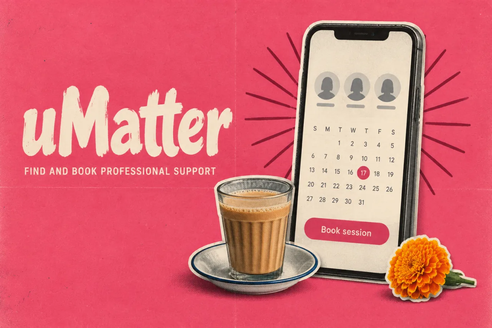

uMatterDesign study · 5 min read
A clearer first step towards professional support.
A 14-hour team challenge exploring a more approachable route from mental-health awareness to finding and booking professional support.
Read the case study

The designed route from discovering an expert to viewing details, choosing a date, and payment.
View full size ↗01 The problem
What should someone understand before being asked to book?
The challenge brief focused on making access to mental-health support more efficient. I led the UX research and design contribution for Team Elementors, working with Pratik Manjrekar on UI design and Nidhi S Kamath on UI and graphic design. Our task was to turn a broad and sensitive brief into a coherent mobile journey within fourteen hours.
Designed for Shritija · student seeking support. Understand a provider and the first commitment before booking.
User context Original team research persona
The original deck describes a medical student balancing studies with a need for professional support.
- The friction
- Limited time and a lack of support around seeking help.
- Design implication
- Put provider information and privacy expectations before the appointment.
Example situation · illustrative scenario. Imagine being ready to explore professional support, but unsure who will see your details or what the first step involves. Every unclear commitment can make it easier to postpone the search.
02 Research & direction
Listening to the sample
In our 65-response survey, almost half wanted professional help while remaining anonymous. Privacy expectations had to shape the journey before calendar and payment screens.
Original research · 65 responses
- 14h
- challenge window
- 65
- survey responses
- 3
- team members
My direction. Within a fourteen-hour challenge, I led the UX contribution toward a visible sequence: understand the provider, choose a time, then commit.
More about the original process
We used a shortened Double Diamond process to divide research, structure, and interface work. Our ten-question survey received 65 responses. The deck reports that almost half wanted professional help while remaining anonymous, and almost 89% had never visited a therapist. Those responses guided the concept toward privacy expectations and an approachable first step.
We supplemented the survey with article research, assembled a persona, mapped the flow, and progressed from wireframes to high-fidelity screens. The sample was exploratory: the deck does not document recruitment, a representative population, or a controlled evaluation. I treat its percentages as directional responses from this sample.
- Explore
Start with providers and support information.
- Understand
See the expert’s details before committing.
- Book
Move through calendar selection and payment.
03 Design decisions
Help people decide who to book.
Open a decision to see the reasoning and trade-off.
01Build a path to support, rather than promising diagnosis
The concept connects expert discovery, an expert profile, appointment selection, and payment.
Why this matters. Breaking access into visible steps gives a person a clearer idea of what happens after they decide to seek help.
The trade-off. Although the challenge brief used the word diagnosis, these screens do not demonstrate clinical diagnosis or treatment effectiveness.
02Put trust information before commitment
Expert detail and review-based trust cues sit before calendar booking and payment in the documented journey.
Why this matters. A person needs to understand who they are approaching before being asked to commit time or money.
The trade-off. Ratings alone do not establish professional competence. Credential verification would need its own operational process.
03Explore lower-pressure ways to engage
The team added awareness content, stories, and lighter activities alongside the booking journey.
Why this matters. Not every visitor is ready to book immediately. The concept offers a way to explore the topic before taking that step.
The trade-off. More destinations can dilute the primary route to professional support; I would test whether they help or distract.
04 The outcome
From considering support to choosing a time.
We completed the mobile concept within the fourteen-hour challenge, from onboarding and expert profiles to appointment selection and payment. I led the team and the UX research and design. Pratik Manjrekar contributed UI design; Nidhi S Kamath contributed UI and graphic design. Our final artifact was a prototype, not a clinical service.
More about the experience
- Context before commitment. Expert details sit before the calendar and payment.
- A visible sequence. The concept separates discovery, consideration, and booking.
- A team outcome. I led UX research/design; Pratik and Nidhi contributed UI and graphic design.
05 Reflection
Trust begins with knowing what the next step asks of you.
The survey raised a question we could not resolve in the challenge: how does someone stay anonymous while booking an accountable professional service? I would work through what is shared at each step before adding more features to the concept.
What I would evaluate next proposed work
- test whether participants understand what is private, what a provider can see, and whether the product offers booking or diagnosis.
- add clear provider credentials, consent and cancellation information, then evaluate the booking journey with appropriate professional input.
Making the first budget less of a form.